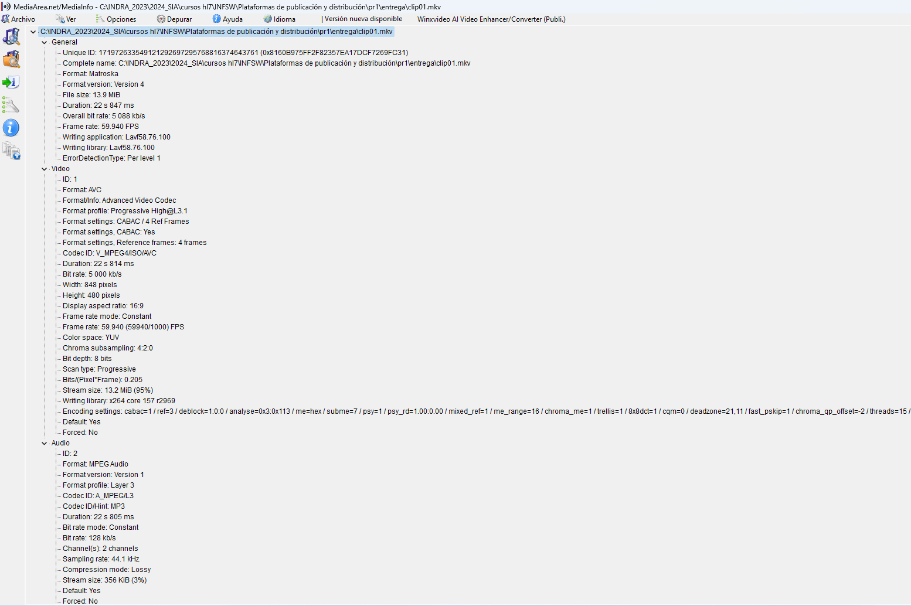
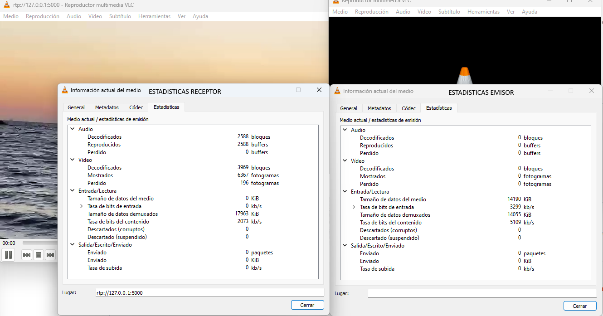
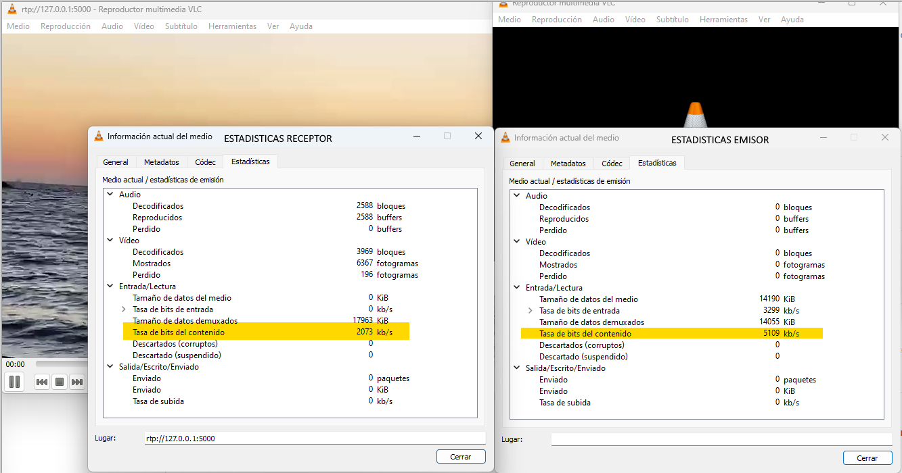

Elige un clip de vídeo de máximo 20 segundos (puedes crearlo con tu dispositivo móvil, que tenga objetos en detalle y en movimiento) y codifícalo con Avidemux eligiendo el formato
y resolución que creas adecuadas para su publicación en web. Teniendo en cuenta que no todos los navegadores aceptan todos los códecs, codifica el vídeo en los formatos necesarios
para que sea compatible con el máximo de navegadores posible. Explica las decisiones tomadas en la codificación y el porqué de cada una.
Confirma con la herramienta MediaInfo que lo ha codificado a la velocidad que querías.
Decisiones de codificación:
Información del video generado en Avidemux
Información del video generado en MediaInfo
Formato MP4 (Contenedor): El formato MP4 es ampliamente utilizado en la web debido a su capacidad para combinar video y audio en un solo archivo.
Códec de Video H.264: H.264 es un códec de compresión eficiente y ampliamente compatible que ofrece buena calidad de video con tamaños de archivo reducidos. La mayoría de los navegadores modernos pueden reproducir video codificado con H.264 sin problemas.
Códec de Audio AAC (fdk): AAC es un códec de alta calidad que proporciona buen sonido en archivos comprimidos. La variante fdk de AAC es preferida por su mejor rendimiento y compatibilidad con diversos dispositivos y navegadores.
Formato de Salida MP4 Muxer: El muxer MP4 combina el video H.264 y el audio AAC (fdk) en un archivo MP4, asegurando una reproducción correcta en navegadores y dispositivos compatibles.
Tarea 1.2
Crea la web. Genera un fichero .html mediante un editor de texto, incrústale el clip de vídeo codificado utilizando el tag <video> de HTML5 y prepara la web para que pueda ser visualizada desde la mayor parte de los navegadores.
En la tarea 1, se responde a esta pregunta.
¿Qué caracteriza el formato HTML5 en publicación y visualización de un vídeo respecto de otros métodos de publicación?
Compatibilidad Universal: HTML5 es ampliamente compatible con la mayoría de los navegadores modernos, lo que garantiza que el video incrustado sea visible en una amplia gama de dispositivos y navegadores sin necesidad de complementos o reproductores de terceros.
Reproducción sin Problemas: La etiqueta <video> de HTML5 permite una reproducción fluida y controlable del video directamente en el navegador, con opciones como reproducción, pausa, volumen, pantalla completa, entre otras, proporcionando una experiencia de visualización más interactiva para los usuarios.
Soporte para Múltiples Formatos: HTML5 admite una variedad de formatos de video como MP4, WebM, y Ogg, lo que brinda flexibilidad al publicar videos en la web y permite que los usuarios vean el contenido en función de la compatibilidad de sus navegadores.
Etiquetas y Atributos Semánticos: HTML5 incluye etiquetas y atributos semánticos que mejoran la estructura y accesibilidad del contenido multimedia. Esto facilita la comprensión del contenido para los motores de búsqueda y usuarios con discapacidades visuales.
Optimización para Dispositivos Móviles: HTML5 está diseñado para ser compatible con dispositivos móviles, permitiendo la visualización de contenido en diferentes tamaños de pantalla y dispositivos sin problemas de rendimiento o compatibilidad.
Mejor Manejo de Formularios: HTML5 mejora el manejo de formularios y permite una mayor flexibilidad y personalización en la creación de formularios interactivos, lo que es útil para aplicaciones web avanzadas que incluyen contenido multimedia.
Accesibilidad Mejorada: HTML5 incluye características como subtítulos automáticos y atributos semánticos que mejoran la accesibilidad del contenido, permitiendo una mejor experiencia para usuarios con discapacidades auditivas o visuales.
Seguridad y Rendimiento: Al eliminar la necesidad de plugins externos como Flash, HTML5 reduce los riesgos de seguridad y mejora el rendimiento general de la página web.
SEO Amigable: Los videos HTML5 pueden ser indexados mejor por los motores de búsqueda gracias a su estructura semántica y la inclusión de metadatos, lo que mejora la visibilidad en los resultados de búsqueda.
Tarea 1.3
Publica el fichero .html y el vídeo en un servidor web gratuito o al CDN visto en la PEC1 (web estática) para verlo con una dirección http pública y valora la experiencia a nivel de usuario/a (retraso de visualización, calidad, etc.).
Retrasos de visualización: El retraso en la visualización de los vídeos puede variar según la ubicación geográfica del usuario y la capacidad del servidor gratuito.
Optimiza los archivos de vídeo: Hay que asegurarse de que los archivos de vídeo estén comprimidos y no sean demasiado pesados. Esto ayudará a acelerar la carga y reproducción.
Velocidad de carga: La velocidad de carga también depende de tu conexión a Internet y la del servidor. Si ambos son rápidos, el retraso debería ser mínimo.
Calidad del video: es crucial para ofrecer una buena experiencia.
Codificación adecuada: Hay que asegurarse que los vídeos estén codificados correctamente. Se recomienda formatos como MP4 o WebM para mantener una alta calidad. En este proyecto se ha usado MP4
Problemas de buffering o baja resolución: Observa si hay problemas de buffering o si la resolución del vídeo es baja, puede afectar negativamente.
Compatibilidad:para conseguir que sea compatible con todos los navegadores.
Utilizando el tag <video> de HTML5 para insertar el vídeo en tu página web. Proporciona múltiples fuentes de vídeo (por ejemplo, MP4 y WebM) dentro de la etiqueta para asegurar la compatibilidad.
Utilizando el tag <source> el navegador elegira automaticamente la fuente mas adeucada segun su compatibildiad
Tarea 1.4
Añade funcionalidad al vídeo mediante los diferentes atributos que el tag <video> ofrece. ¡Experimenta! Dame la dirección web del vídeo para poderlo visualizar.
Indaga qué servicios adicionales ofrecen los CDN en estos aspectos, te doy algunos ejemplos: subtitulado automático, identificación de cambios de plan, detección de caras, etc.
Como servicios adiciones ofrecidos por los CDN, serian princilpalmente:
Subtitulación Automática: Generación automática de subtítulos para videos utilizando algoritmos de reconocimiento de voz, con esto se mejora la accesibilidad y permite a los usuarios finales comprender el contenido sin necesidad de sonido, ayudando asi a los usuarios con discapacidad auditiva.
Detección de Caras: Algoritmos que detectan y reconocen caras en los videos, siendo util para aplicaciones de seguridad, marketing dirigido y análisis de contenido.
Transcodificación Adaptativa: Proceso de convertir un archivo de video a varios formatos y resoluciones diferentes para optimizar la reproducción en dispositivos con diferentes capacidades de red y pantalla.
Optimización de Imágenes y Videos: Compresión y ajuste de imágenes y videos en tiempo real para reducir el tiempo de carga sin comprometer la calidad visual.
Seguridad y Protección de Contenido: Implementación de medidas de seguridad como la protección contra piratería, control de acceso y cifrado de datos para asegurar la integridad del contenido distribuido.
Tarea 2.1
Genera un clip de vídeo de calidad HD de unos 20 segundos de duración (o descárgalo de la web) que posea movimiento (algo equivalente al clip de fútbol que he usado de ejemplo).
Sea cual sea su formato, conviértelo a MP4 con Avidemux con los siguientes valores y lo denominaremos clip01. La codificación de salida será MPEG4 AVC y a VIDEO OUTPUT-CONFIGURACIÓN
selecciona como modo de codificación TASA DE BITS MEDIA-DOS PASADAS (para mantener la calidad) y 5000 Kbps. Como formato de audio, MP3 (lame) y como contenedor, MKV.
Incluye estos clips en la entrega de la práctica. Confirma con MediaInfo que Avidemux ha realizado el trabajo correctamente.
Se ha realizado la conversión a MKV, pero html5 no reproduce este formato, por lo que para publicarlo y reproducirlo lo he tenido que convertir a formato MP4.
Información del Media Info del video

Tarea 2.2 y Tarea 2.3
Indica los códecs con los cuales dice que se generó el fichero almacenado. En ESTADÍSTICAS indica la TASA DE BITS DE CONTENIDO que está leyendo de disco,
es la necesaria para una reproducción correcta del contenido (es un valor cambiante, de forma que toma un valor mediano aproximado)

Tarea 2.4
Si realizas una pausa en el VLC emisor, ¿cuántos según tarda en pausarse el vídeo al receptor?
He hecho varias pruebas y tarda unos segundos en volver a empezar.
¿Por qué? Vuélvelo a poner en reproducción.
Latencia de la red: Yo entiendo que es por la latencia de la red entre el emisor y el receptor. En una red local (LAN), este retraso suele ser muy bajo (milisegundos),
pero en una red más amplia (WAN) o con conexiones a Internet, puede aumentar considerablemente (segundos).
Tarea 2.5
Calcula aproximadamente la compresión que el VLC de emisión está realizando al transcodificar el fichero almacenado a stream.
Realiza una captura de pantalla del escritorio con los dos VLC en marcha y sus ventanas con las estadísticas de cada uno abiertas, e inserta la captura en el documento en el cual escribes las respuestas de esta práctica.
Basandonos en los codecs de la pregunta 2.2 y 2.3, he remarcado los datos para el calculo

El calculo aproximado de la compresión seria : (5109-2073)/5109=59%
Tarea 2.6
Enfocando-nos en la transmisión en vivo de un stream de vídeo mediante un servicio de cloud CDN, éstos ofrecen múltiples modos de distribución, como por ejemplo streaming de baja latencia por entornos de mínimo retraso, streaming por OTT, etc... ¡incluso interactivo!
Transmisión en Vivo de un Stream de Video Mediante Cloud CDN: Enfoque en Streaming por OTT (Over-the-Top)
Introducción
La transmisión de video en vivo a través de servicios de Cloud CDN ha revolucionado la manera en que el contenido multimedia llega a audiencias globales.
El streaming por OTT, que se basa en la entrega directa de contenido a través de internet, ha sido adoptado por plataformas como Netflix, Hulu, y Amazon Prime Video.
La idea es resumir el proceso detallado para implementar un streaming por OTT, incluyendo las políticas de usuarios, roles de gestión,
y un cálculo estimativo de costos para una transmisión HD en directo para 10,000 usuarios simultáneos.
Proceso de Streaming por OTT
1. Preparación y Configuración Inicial
a. Selección del Proveedor de Cloud CDN:
Elegir un proveedor de Cloud CDN que ofrezca servicios robustos para streaming por OTT, como AWS CloudFront, Akamai, o Google Cloud CDN.
Configurar una cuenta y obtenga las credenciales necesarias para acceder a los servicios del CDN.
b. Preparación del Contenido:
Asegurarse de que el contenido de video esté en un formato adecuado para la transmisión en línea, como H.264 para video y AAC para audio.
Utilizar herramientas de codificación en vivo como AWS Elemental MediaLive, OBS Studio, o servicios similares ofrecidos por el proveedor de CDN.
2. Codificación y Emisión del Video
a. Configuración de la Codificación:
Configurar el codificador para convertir la señal de video en un formato digital óptimo para la transmisión. Ajuste la tasa de bits y resolución para garantizar calidad HD (720p o 1080p).
Configurar la codificación adaptativa (ABR - Adaptive Bitrate Streaming) para optimizar la entrega de contenido según las condiciones de red de los usuarios finales.
b. Emisión del Stream:
Establecer el punto de origen del stream utilizando la URL de emisión proporcionada por el CDN.
Iniciar la emisión del video en vivo hacia el servidor de origen del CDN.
3. Configuración del CDN para Streaming por OTT
a. Servidor de Origen:
El servidor de origen del CDN recibe y procesa el stream de video en vivo.
Configurar políticas de almacenamiento en caché para optimizar la entrega de segmentos de video.
b. Distribución del Contenido:
Configurar la red de entrega de contenido (CDN) para distribuir el video desde nodos de borde cercanos a los usuarios finales.
Implementar protocolos de transmisión eficientes como HLS (HTTP Live Streaming) o DASH (Dynamic Adaptive Streaming over HTTP).
c. Políticas y Roles de Gestión:
Definir roles de gestión como administradores de red, ingenieros de transmisión y operadores de contenido.
Aplicar políticas de acceso y control para asegurar que solo personal autorizado pueda gestionar el flujo de trabajo de transmisión.
4. Monitoreo y Optimización
a. Monitoreo en Tiempo Real:
Utilizar herramientas de monitoreo para rastrear el rendimiento del stream, observando métricas como latencia, tasa de bits y calidad de experiencia del usuario.
Configurar alertas para notificar a los operadores de cualquier problema en la transmisión.
b. Optimización Continua:
Ajustar la configuración de la codificación y las políticas de caché para mejorar la entrega del video.
Implementar técnicas de escalado automático para manejar picos de tráfico y asegurar una entrega continua y sin interrupciones.
Políticas Específicas y Roles
Políticas de Usuarios:
Implementar el control de acceso basado en roles (RBAC) para asegurar que solo usuarios autorizados puedan acceder a configuraciones críticas.
Aplicar políticas de seguridad para proteger el contenido contra piratería y acceso no autorizado.
Gestión de Recursos:
Asignar ancho de banda y recursos de red en función de la demanda de los usuarios finales.
Utilizar balanceo de carga para distribuir el tráfico equitativamente entre los nodos de borde.
Roles de Administración:
Administrador de Red: Responsable de la configuración de la red de entrega y la optimización del rendimiento.
Ingeniero de Transmisión: Encargado de la configuración del codificador y la supervisión de la calidad del stream.
Operador de Contenido: Responsable de la gestión del contenido y la configuración del servidor de origen.
Cálculo Estimativo de Coste
Para calcular el coste estimativo de una transmisión en vivo de un stream HD para 10,000 usuarios simultáneos dentro de una misma región, he considerado los siguientes factores:
Suposiciones:
Resolución HD (720p) con una tasa de bits promedio de 3 Mbps.
Duración de la transmisión: 1 minuto.
Cálculo de Uso de Datos:
3 Mbps * 60 segundos = 180 Mbps por usuario.
180 Mbps / 8 = 22.5 MB por usuario por minuto.
22.5 MB * 10,000 usuarios = 225,000 MB o 225 GB por minuto.
Coste Estimado:
Suponemos que el coste de transferencia de datos en el CDN es $0.08 por GB.
225 GB * $0.08 = $18 por minuto.
Como conclusión, el streaming por OTT es una solución efectiva para la distribución de contenido de video en vivo a una audiencia masiva a través de internet.
El proceso implica la preparación y codificación del contenido, configuración del CDN para una entrega eficiente, y monitoreo constante para optimizar el rendimiento.
Las políticas de usuarios y roles de administración aseguran la seguridad y eficiencia del servicio. El coste estimado para una transmisión en vivo de un stream HD
para 10,000 usuarios simultáneos es aproximadamente $18 por minuto, dependiendo del proveedor y las tarifas específicas